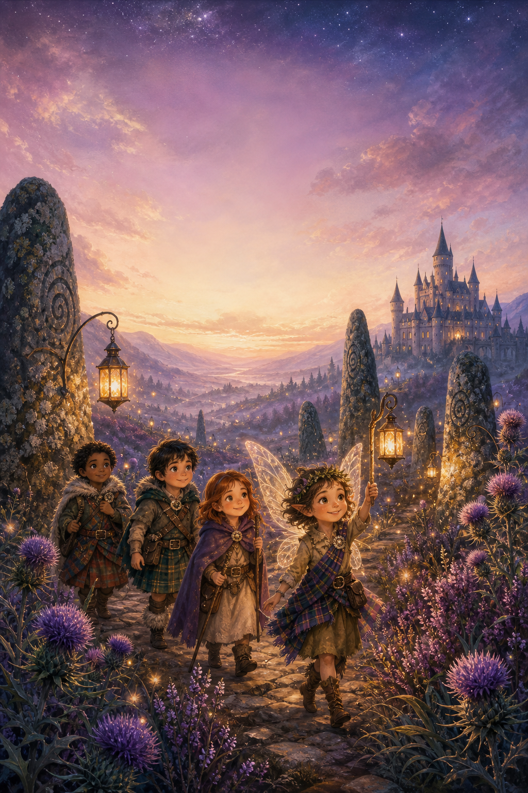
Adventures in Alba
Player Handbook — Character creation, HP, MP, leveling, kindreds, jobs, cantrips, spells, gear, and a worked example
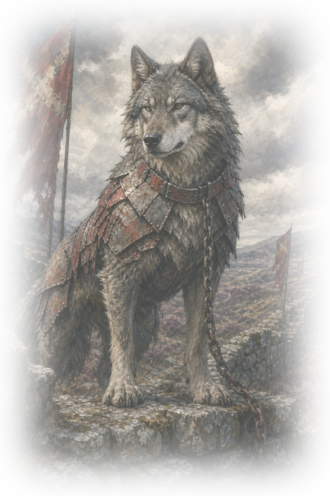
How to use this book
- Choose who helps as the Guide.
- Make a hero in five easy steps.
- Use Strength, Int, Agility, Wis, or Luck when a roll is exciting.
- Keep the story warm: heroes can be muddy, surprised, or silly, but never shamed.
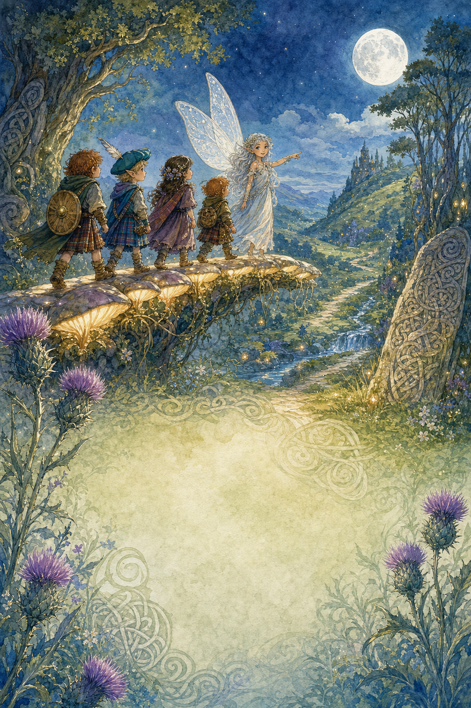
What you need
- One six-sided die.
- A pencil, character sheet, and three little counters.
- A grown-up or older sibling Guide.
- A promise to listen and take turns.
What players say
- “I help.”
- “I try the brave thing.”
- “Can I talk to it?”
- “I look closer.”
- “Can my friend help?”
Every player gets a turn to say one idea before the dice decide anything.
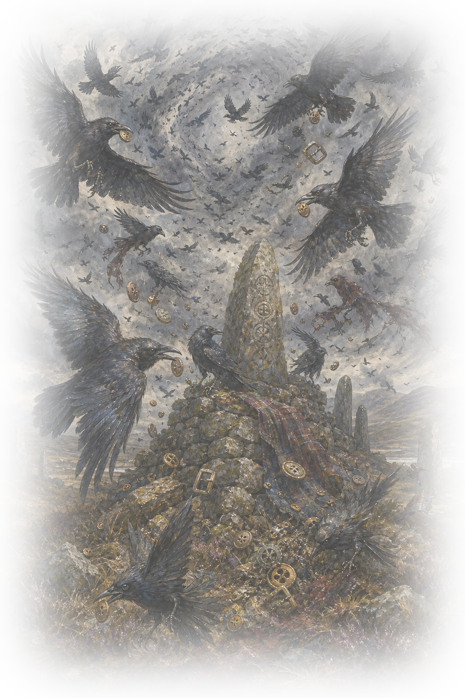
The easy dice rule
When the answer is obvious, no roll is needed. When everyone leans forward and wonders what might happen, roll one six-sided die and add the hero's matching stat bonus.
| Total | Result | Say it like this |
|---|---|---|
| 1–3 | Wobble | It goes wrong in a funny, safe, or messy way. |
| 4–5 | Yes, but... | It works, and there is a tiny cost or choice. |
| 6+ | Bright success | It works well, and the hero feels proud. |
The five classic stats
- Strength — lifting, climbing, holding, pushing, protecting.
- Int — puzzles, facts, plans, reading runes, remembering.
- Agility — sneaking, dodging, catching, balancing, jumping.
- Wis — feelings, animals, nature, noticing, sensible choices.
- Luck — charms, surprises, odd magic, last-chance moments.
When not to roll
- The action is safe and obvious.
- An adventurer is only describing how they look or feel.
- The group already found a kind solution.
- A roll would slow a warm moment.
If another hero clearly helps, add +1 or let the adventurer roll again and choose the better die.
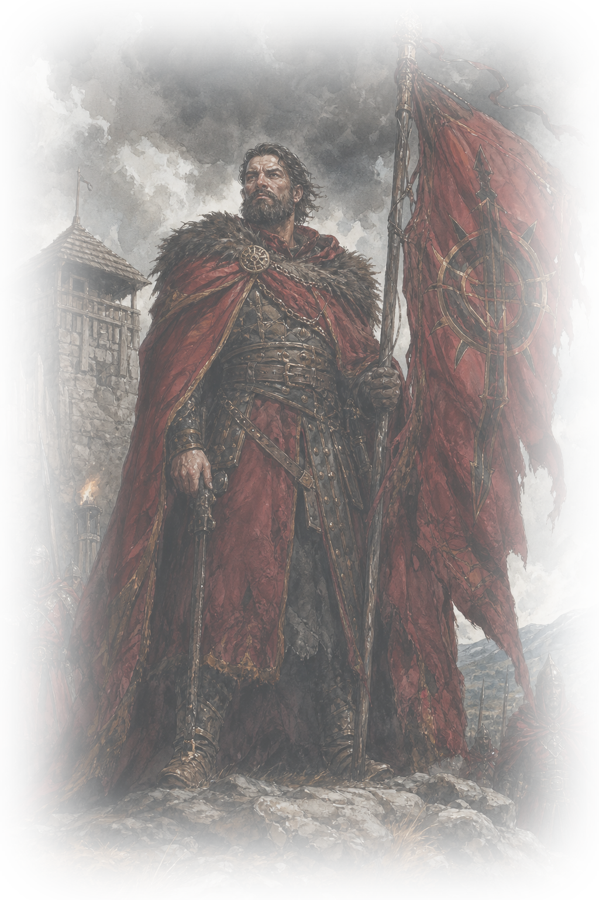
Stat creation: classic five stats
1. Strength
Lifting, climbing, holding, pushing, protecting.
2. Int
Puzzles, facts, plans, reading runes, remembering.
3. Agility
Sneaking, dodging, catching, balancing, jumping.
4. Wis
Feelings, animals, nature, noticing, sensible choices.
5. Luck
Charms, surprises, odd magic, last-chance moments.
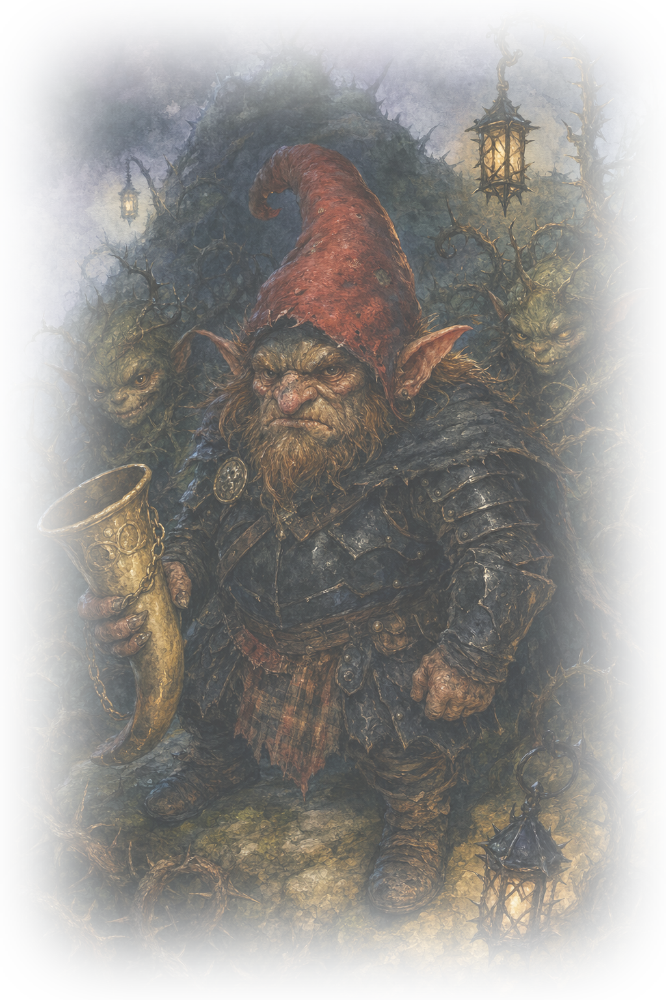
HP, MP, and resting
Heart Points (HP)
HP shows how much bumping, slipping, startling, and tiring a hero can handle before they need a rest. Heroes are never described as badly hurt; low HP means muddy, shaken, sleepy, or overwhelmed.
| Level | Hero HP | Hero MP |
|---|---|---|
| 1 | 10 + Strength | 6 + Wis or Luck |
| 2+ | +2 HP each level | +1 MP each level |
Magic Points (MP)
MP fuels adventure spells. Cantrips cost 0 MP. Most spells cost 1 MP; bigger story spells cost 2 MP if the Guide allows them.
Resting
- Snack rest: after a quiet snack, regain 2 HP and 1 MP.
- Safe camp: after a full rest, regain all HP and MP.
- At 0 HP: the hero sits out one tense moment, then returns with 1 HP when a friend helps.
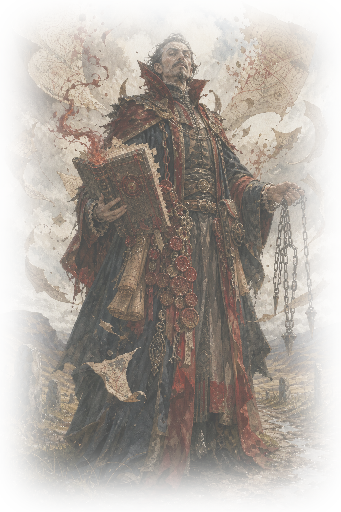
Leveling and feats
| Level | What changes | What to say |
|---|---|---|
| 1 | Choose kindred, job, stats, cantrip, gear. | "This is who I am at the start." |
| 2 | +2 HP, +1 MP, learn one new spell or tool trick. | "I learned from the road." |
| 3 | Improve one +0 stat to +1. | "I practised something hard." |
| 4 | +2 HP, +1 MP, choose one feat. | "I have a special talent." |
| 5 | Improve one +1 stat to +2, learn one spell. | "I am growing into a hero." |
| 8 | Choose another feat. | "My legend gets bigger." |
Feats every 4 levels
Stout Heart
+3 HP. Once per session, stand back up with 1 HP after a friend cheers you.
Deep Spark
+2 MP. Your first adventure spell each session costs 0 MP.
Lucky Pocket
Once per session, spend a copper, button, or charm to reroll Luck.
Helpful Friend
When you help another hero, they gain +2 instead of +1.
Storm Runner
At level 4+, ignore one weather trouble per session if you describe a bold dash.
Oath Keeper
At level 4+, when you keep a promise despite danger, regain 1 MP.
Monster Friend
At level 8+, one creature you helped may return once as an ally.
Relic Bearer
At level 8+, carry one extra enchanted item without trouble.
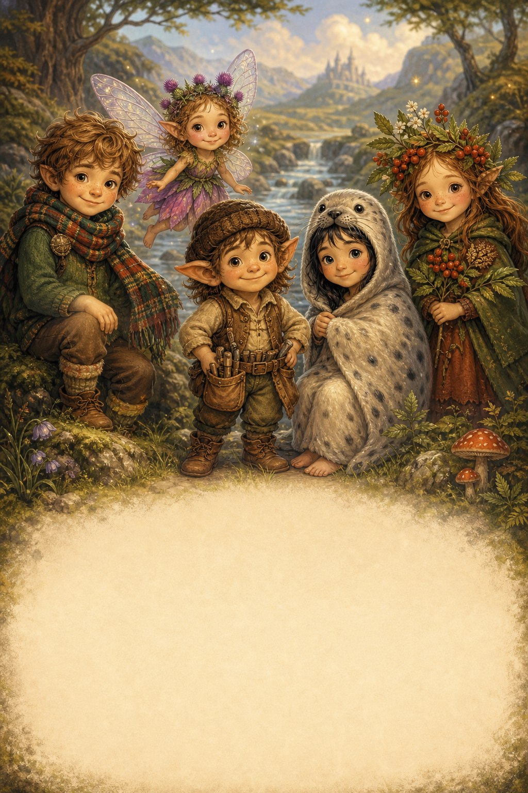
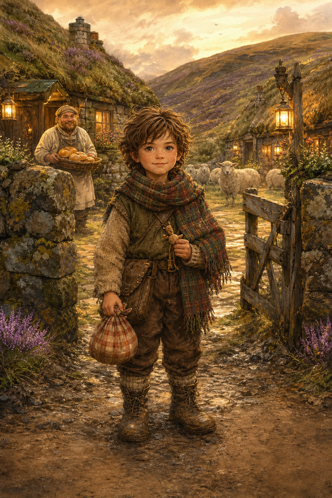
Glenfolk
Glenfolk are croft, cottage, castle, and market-lane adventurers with practical hearts. They know how to ask neighbours, find a dry path, and make ordinary things feel brave.
Glenfolk grow up where ordinary people meet fairy trouble: fishing piers, bakery lanes, crofts, castles, and wind-bent roads. Their families teach names, favours, and practical courage.
Good manners with common folk; practical plans; knowing who owns the key.
Story gift
Once per adventure, remember a local clue or helpful person.
Look
- Tartan scarf, muddy boots, treasure pockets.
- A wooden badge, snack cloth, or tiny family charm.
Good at the table
- Ask an auntie, shepherd, baker, guard, or gardener for help.
- Know what a tool is called or where a path should go.
- Offer practical kindness: a snack, blanket, or fixed latch.
Home and people
A smoky cottage, market street, watch tower, or sheep path with a view of rain.
Best first stat
Int or Wis
First scene idea
A village gate is stuck and everyone has an idea.
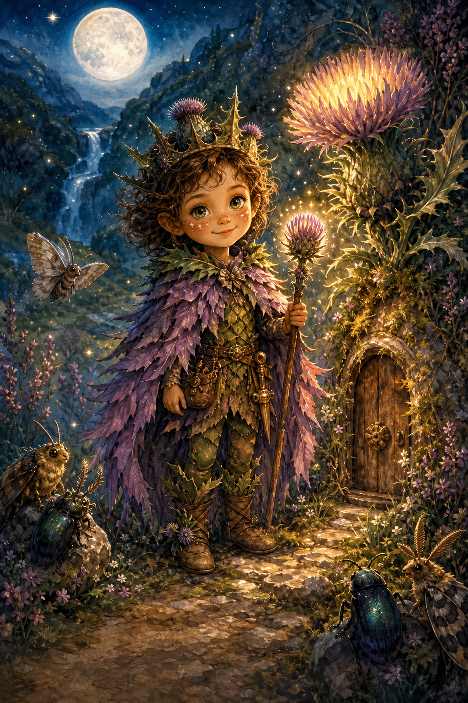
Thistle Fairy
Thistle Fairies are small bright folk with manners, shimmer, and secret paths. They are excellent at noticing fairy marks that bigger people step over.
Thistle Fairies keep old courtesies: say thank you to doorways, bow to bees, and never laugh at a mushroom ring. They can be dramatic, but they hate lonely places.
Fairy etiquette, secret doors, tiny gossip, and lucky timing.
Story gift
Once per scene, notice nearby fairy magic.
Look
- Petal cloak, star freckles, tiny crown.
- Boots that never quite touch the puddles.
Good at the table
- Ask flowers, moths, or beetles for tiny gossip.
- Spot a hidden ring of mushrooms or a polite fairy door.
- Remember an old rule of fairy manners.
Home and people
A flower hall, bell-stem tower, hollow thorn, or moonlit garden path.
Best first stat
Luck
First scene idea
A secret flower-door opens only after a polite greeting.
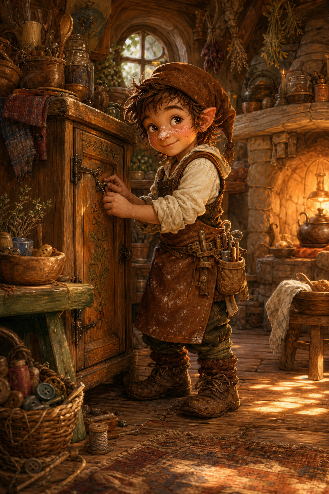
Brownie Helper
Brownie Helpers are cozy fixers who tidy, mend, and improve small things. They turn a messy room, broken spoon, or squeaky hinge into a clue.
Brownie Helpers believe a home is a promise you can sweep, mend, stir, and share. They notice what changed in a room because they know how rooms should feel.
Mending, cleaning, small tools, and spotting what is out of place.
Story gift
Repair or improve one tiny object each scene.
Look
- Apron, tool pouch, flour on nose.
- Buttons, string, thimble hat, or polished spoon.
Good at the table
- Fix a latch, mend a pouch, clean mud from a clue.
- Find the important thing hiding in a pile of mess.
- Make a worried home feel safe again.
Home and people
A warm kitchen, stable loft, hidden pantry, or workshop under the stairs.
Best first stat
Int
First scene idea
A kitchen clue is hidden under a very silly mess.
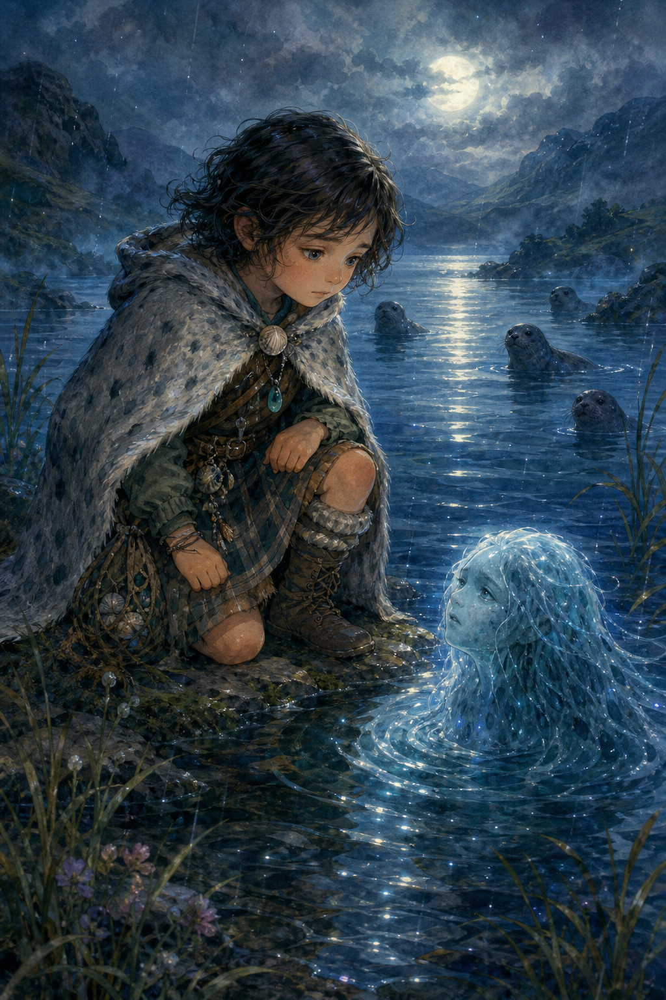
Selkie-Born
Selkie-Born heroes have gentle loch-hearts and moonlit dreams. They understand water, weather, and the soft feelings people hide under their coats.
Selkie-Born families tell stories beside dark water. They know that songs can be maps, tears can be messages, and coats can carry memories.
Listening, weather sense, comfort, swimming, and quiet courage.
Story gift
Understand water, weather, or a sad feeling.
Look
- Soft seal-cloak, shell button, sea-glass charm.
- Wet curls, quiet eyes, and pockets full of smooth stones.
Good at the table
- Hear what rain, waves, or a puddle is trying to say.
- Comfort a lonely creature without many words.
- Find a safe way across shallow water.
Home and people
A loch shore, fishing boat, moon pool, sea cave, or rain-soft village.
Best first stat
Wis
First scene idea
A sad loch-creature will only speak to someone gentle.
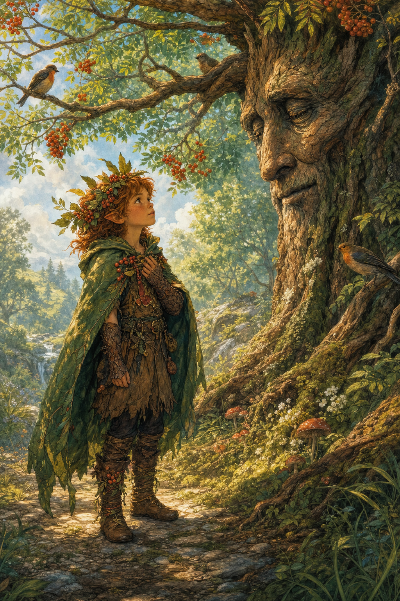
Rowan-Kin
Rowan-Kin are forest adventurers with leaf crowns and careful listening. Old trees remember them, birds trust them, and red berries mark their promises.
Rowan-Kin learn that every path has a memory. They tie red threads for promises and leave crumbs for birds who carry news.
Nature signs, quiet movement, forest memory, and protective promises.
Story gift
Ask a tree, bird, or breeze for one hint.
Look
- Red berries, green cloak, bark-pattern gloves.
- Leaf crown, acorn buttons, or a walking twig.
Good at the table
- Read bent grass, scratched bark, or a bird alarm.
- Ask an old tree who passed this way.
- Hide gently among leaves without frightening anyone.
Home and people
A rowan grove, mossy den, treehouse, old standing stone, or fern tunnel.
Best first stat
Wis or Agility
First scene idea
An old tree remembers the wrong name and needs patient listening.
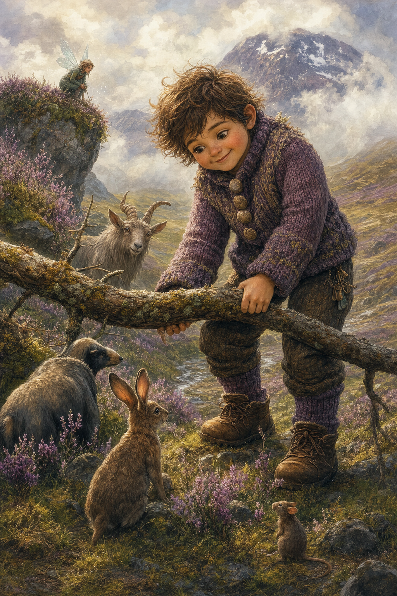
Heather Giantling
Heather Giantlings are small for giants, huge for fairies, and very gentle. They are best when something heavy, high, or frightening needs a careful friend.
Heather Giantlings are taught that strength is for shelter. They remember hill songs, stone names, and how to make big footsteps soft.
Careful strength, carrying friends, big calm, and hill-country stories.
Story gift
Lift, push, or carry one heavy thing safely.
Look
- Big knitted jumper, pebble buttons, warm laugh.
- Purple heather in hair and boots like little boats.
Good at the table
- Hold a door, carry a tired friend, or move a fallen branch.
- Stand calmly when a noise is big.
- Ask hills, stones, or goats about family stories.
Home and people
A hillside bothy, giant family cairn, sheep meadow, or cave with a warm fire.
Best first stat
Strength
First scene idea
A fallen branch blocks the path, but small animals live underneath.
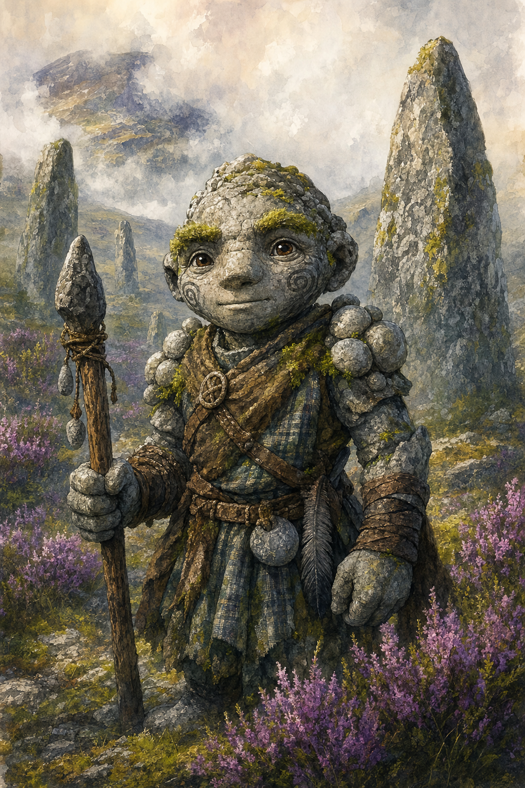
Cairnling
Cairnlings are living little stone-folk awakened from old hill cairns. They have pebble shoulders, moss brows, and memories older than castles.
Cairnlings keep the oldest promises of Alba. They carve memory-knots into stones and believe every hill has a voice.
Stone memory, patience, endurance, and old border knowledge.
Story gift
Once per adventure, ask old stone what it has seen or endured.
Look
- Pebble plates, moss beard, carved rune cheeks.
- A hollow chest that softly echoes when danger is near.
Good at the table
- Stand firm against wind, fear, or pushing.
- Remember ancient roads, burials, borders, and broken oaths.
- Blend into rocks, cairns, walls, and ruins.
Home and people
A standing stone ring, mountain cairn, ruined tower, or sleeping giant road.
Best first stat
Strength or Wis
First scene idea
A border stone remembers the wrong king and blocks a road.
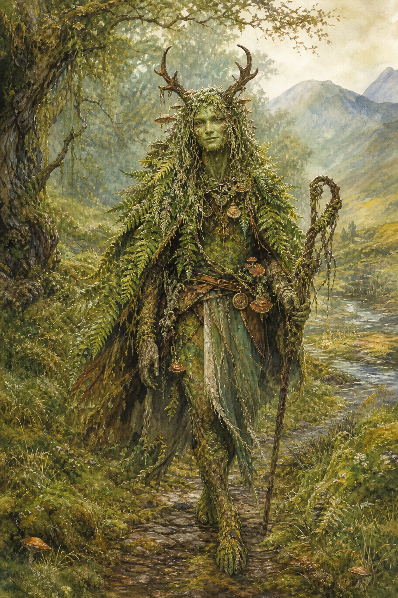
Mosskin
Mosskin are antlered green folk of bog, bark, fern, and lichen. Their hair grows tiny leaves, and their footsteps smell of rain.
Mosskin clans move with seasons and speak to roots before making camp. They dislike axes used without thanks.
Plant speech, bog lore, hiding, and patient healing.
Story gift
Once per scene, make plants show a clue, path, or warning.
Look
- Small antlers, fern cloak, bark fingers, green-gold eyes.
- Mushrooms on the hat and a pouch of seeds.
Good at the table
- Ask moss which way feet travelled.
- Grow a tiny bridge, cushion, or hiding tuft.
- Know whether a forest is angry, hungry, or afraid.
Home and people
A bog island, oak hollow, fern den, or hidden green hall.
Best first stat
Wis
First scene idea
A bog path grows angry because someone cut living roots.
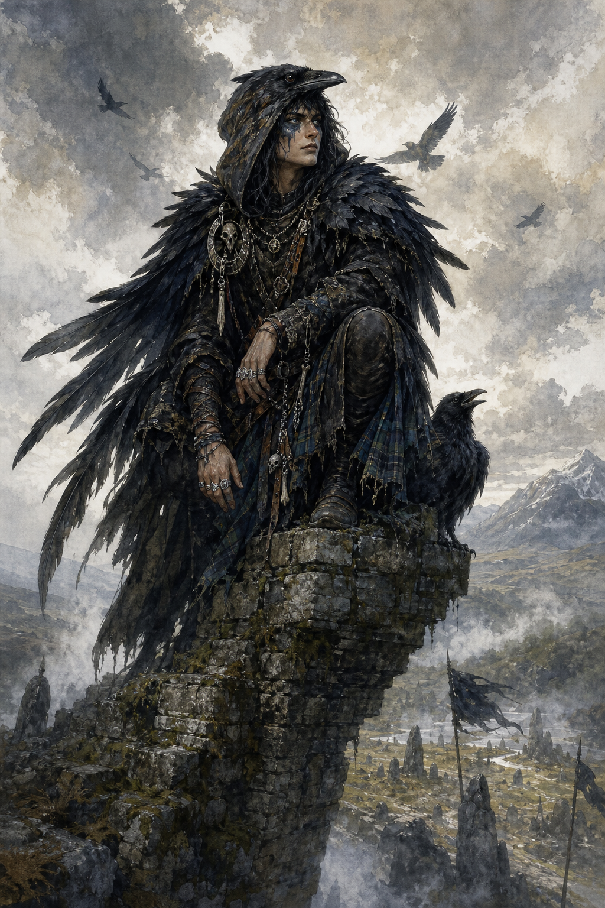
Corbie-Folk
Corbie-Folk are raven-winged omen-speakers with black feathers, bright eyes, and a fondness for shiny secrets.
Corbie-Folk are not bad omens; they are messengers. They carry news between clans, cairns, and battlefields.
Omens, messenger lore, aerial scouting, and shiny clues.
Story gift
Once per adventure, see an omen: a safe warning, lucky sign, or clue in the sky.
Look
- Feather mantle, beak-like mask, black wing-cloak.
- Silver rings, bone charms, or a pouch of bright buttons.
Good at the table
- Fly or glide a short safe distance.
- Understand ravens, crows, battlefield flags, and old songs.
- Find shiny clues that others overlook.
Home and people
A cliff nest, ruined belfry, pine rookery, or wind tower.
Best first stat
Agility or Luck
First scene idea
Ravens circle a battlefield cairn with an omen nobody understands.
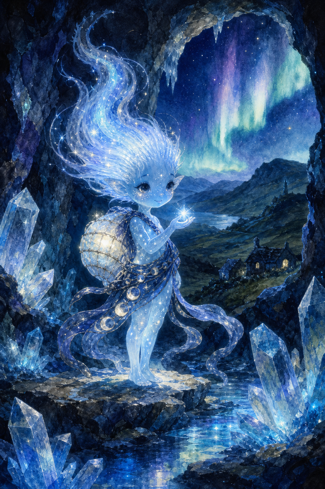
Star-Sprite
Star-Sprites are tiny blue-white folk fallen from cold northern lights. They glow when excited and hum when maps are wrong.
Star-Sprites tell time by constellations and trade dreams for safe shelter. They fear cages and love open skies.
Starlight, tiny size, prophecy marks, and wonder.
Story gift
Once per scene, glow starlight that reveals hidden ink, footprints, or fairy doors.
Look
- Tiny luminous body, comet hair, silver freckles.
- A lantern shell, star-pin, or moon-thread sash.
Good at the table
- Slip through tiny spaces without separating from the group.
- Read constellations, old prophecy marks, and moon doors.
- Light one dark corner without using fire.
Home and people
A crystal cave, observatory ruin, moon pool, or thistle lantern.
Best first stat
Luck
First scene idea
A moon door opens only for starlight and a brave question.
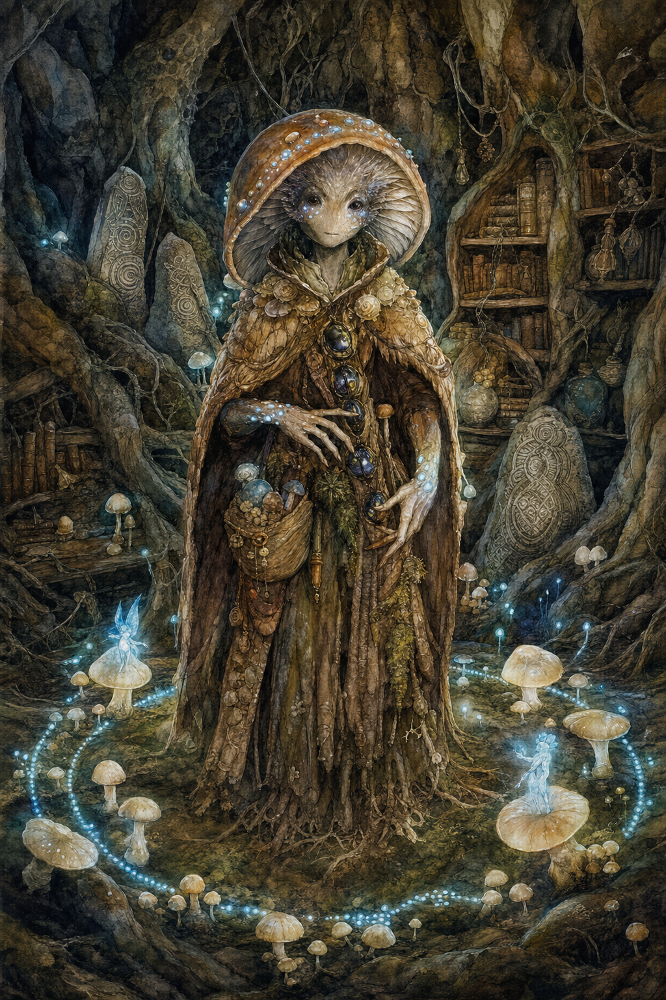
Myceling
Mycelings are mushroom-and-root folk who remember places through underground threads. They are quiet, strange, and excellent at finding hidden connections.
Mycelings are patient archivists of the earth. They treat decay as a library and old logs as storybooks.
Connections, underground maps, spores, and quiet wisdom.
Story gift
Once per adventure, ask the under-root network whether two places, people, or clues are connected.
Look
- Mushroom cap hood, root fingers, soft glowing spots.
- A satchel of spores, clay beads, and beetle-shell buttons.
Good at the table
- Sense tunnels, cellars, buried doors, and old roots.
- Share a whisper through a root or mushroom ring.
- Recognize poisons, potions, and strange spores.
Home and people
A mushroom circle, root archive, cellar grove, or damp fairy hall.
Best first stat
Int or Wis
First scene idea
The under-root network whispers that two mysteries share one source.
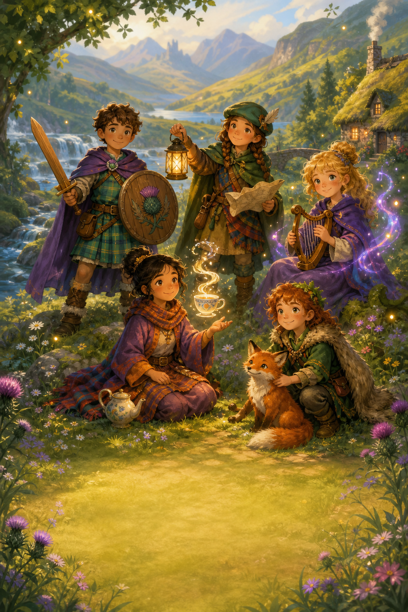
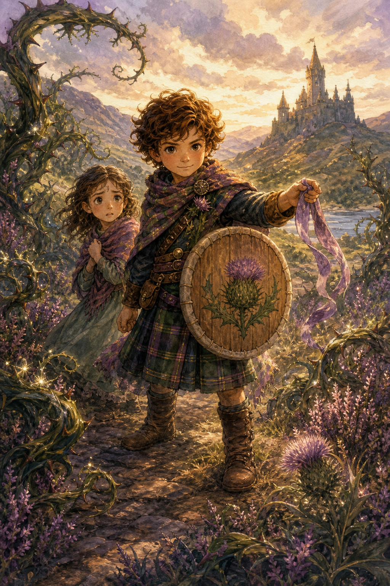
Thistle Knight
Thistle Knights protect friends and stand bravely at the front. They are not rough or bossy; they make scary moments feel safer for everyone.
Knights train with wooden shields, promise words, and the rule that strength must leave people safer than before.
Gift
Once per scene, turn a scary moment into a brave one.
Class stat block
Class stat block shows a strong default build. Adventurers may still choose their own +2, +1, +1, +0, +0 spread.
Class cantrip
Shield Spark: make a tiny glowing shield mark that shows where protection is needed.
Class spells
- Shield Spark (0 MP): mark the safest square.
- Shield of Thistles (1 MP): hold back wind, rain, or branches.
Try this
- Hold a shield or walking stick like a promise.
- Stand between danger and a friend.
- Say a brave sentence out loud.
Starter kit
- Soft shield
- Promise ribbon
- Thistle badge
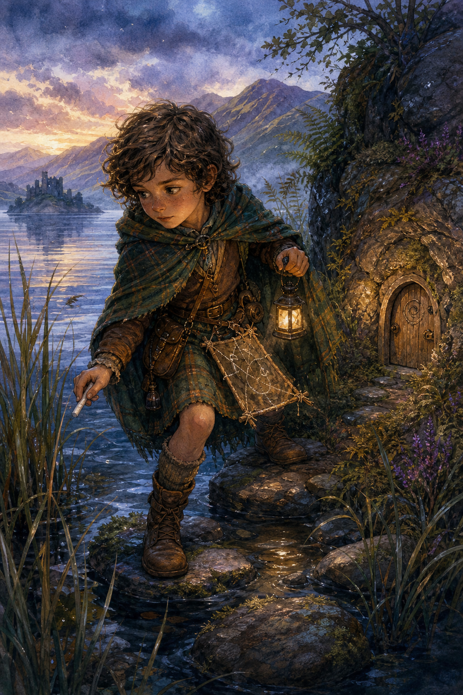
Loch Scout
Loch Scouts find paths, listen for clues, and spot hidden doors. They love maps, footprints, bird calls, and the first tiny sign that something changed.
Scouts learn to stop first, look second, and step third. They are brave because they are careful.
Gift
Ask the Guide one “what do I notice?” question.
Class stat block
Class stat block shows a strong default build. Adventurers may still choose their own +2, +1, +1, +0, +0 spread.
Class cantrip
Mist Mark: leave a harmless glowing footprint only friends can see.
Class spells
- Mist Mark (0 MP): leave friend-only glowing footprints.
- Mist Step (1 MP): slip past a watcher or trap.
Try this
- Follow tracks through reeds or heather.
- Read a map or remember a landmark.
- Balance across stepping stones.
Starter kit
- Chalk
- String map
- Tiny lantern
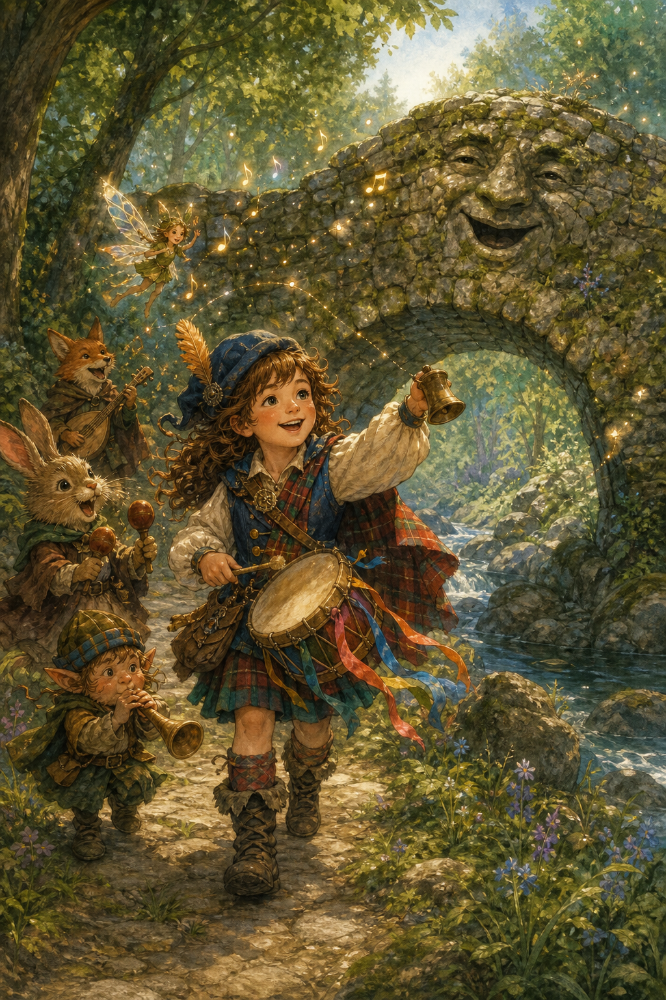
Song-Spark Bard
Song-Spark Bards use music, jokes, and stories to lift everyone up. Their magic is cheer, rhythm, and the courage that comes from being heard.
Bards collect funny endings, gentle jokes, and songs that remind scared folk they are not alone.
Gift
Give another hero +1 after a kind song, rhyme, joke, or cheer.
Class stat block
Class stat block shows a strong default build. Adventurers may still choose their own +2, +1, +1, +0, +0 spread.
Class cantrip
Courage Note: hum a note that gives one friend a smile and steady hands.
Class spells
- Courage Note (0 MP): steady a friend.
- Kind Whisper (0 MP): help someone say a feeling.
- Brave Chorus (1 MP): give two friends +1 on the same scene.
Try this
- Cheer a friend who feels unsure.
- Calm a crowd with a rhyme.
- Make a grumpy bridge laugh politely.
Starter kit
- Bell
- Ribbon drum
- Story cards
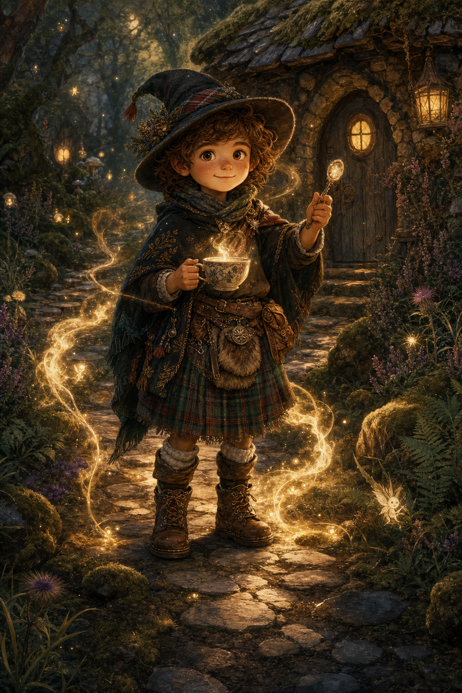
Hearth Mage
Hearth Mages carry warm, safe magic: sparks, steam, tea, and tiny lights. Their spells help problems; they do not solve the whole story alone.
Hearth Mages practise with kettles, kind words, and sparks no bigger than fireflies.
Gift
Create a small helpful magical effect.
Class stat block
Class stat block shows a strong default build. Adventurers may still choose their own +2, +1, +1, +0, +0 spread.
Class cantrip
Glow-Pebble: make a pebble or spoon shine like a candle.
Class spells
- Glow-Pebble (0 MP): candle-sized light.
- Tea-Steam (0 MP): warm or reveal breeze.
- Foxfire Path (1 MP): find the gentlest route.
Try this
- Light a path with a glow-pebble.
- Warm cold hands with tea-steam.
- Reveal a hidden breeze or fairy mark.
Starter kit
- Teacup
- Glow pebble
- Little spoon wand
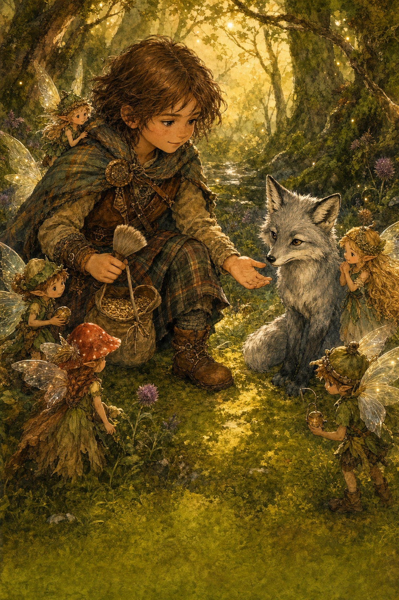
Beast Friend
Beast Friends understand animals and earn trust with gentle patience. They notice tails, ears, paws, feathers, and feelings before they roll dice.
Beast Friends learn posture, patience, and how to let a creature choose to come closer.
Gift
Ask a friendly creature for a small favor.
Class stat block
Class stat block shows a strong default build. Adventurers may still choose their own +2, +1, +1, +0, +0 spread.
Class cantrip
Gentle Scent: make your hand smell like oats, apples, rain, or safe grass.
Class spells
- Gentle Scent (0 MP): smell like oats, apples, or safe grass.
- Kind Whisper (0 MP): calm a creature.
- Foxfire Path (1 MP): find a nature route.
Try this
- Offer a snack without grabbing.
- Copy a small sound politely.
- Ask what the creature feels.
Starter kit
- Oat pouch
- Soft brush
- Kindness bell
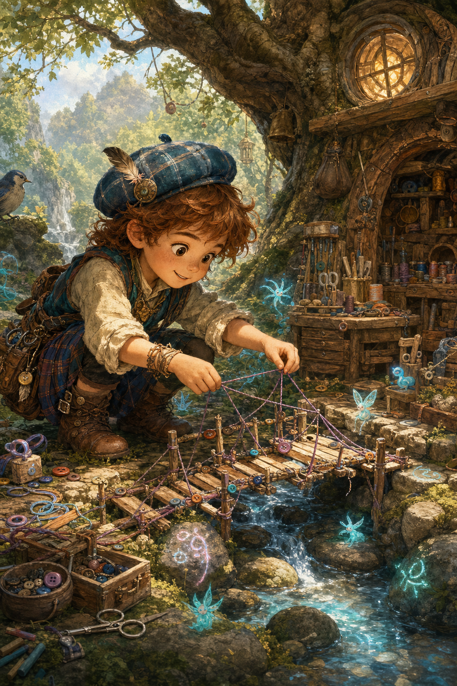
Puzzle Tinker
Puzzle Tinkers build, open, balance, fold, and wonder how things work. They like ordinary bits: string, cups, buttons, chalk, and clever questions.
Tinkers ask “what happens if?” and keep spare buttons because every mystery has a small moving part.
Gift
Make a simple tool from ordinary bits.
Class stat block
Class stat block shows a strong default build. Adventurers may still choose their own +2, +1, +1, +0, +0 spread.
Class cantrip
Button-Click: make one harmless latch, knot, or toy mechanism wiggle once.
Class spells
- Button-Click (0 MP): wiggle one latch, knot, or toy mechanism.
- Tiny Mend (1 MP): repair one small object.
- Rune Read (1 MP): ask one question about old writing.
Try this
- Fix a latch or squeaky hinge.
- Build a tiny bridge from safe pieces.
- Turn clues into a simple plan.
Starter kit
- String
- Chalk
- Button box
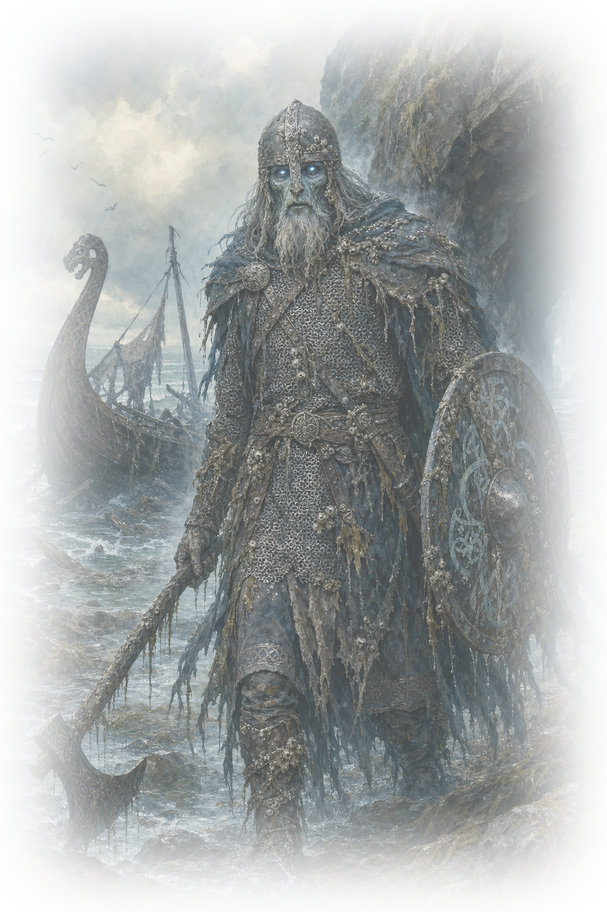
Skills and checks
What is a skill?
A skill is a thing an adventurer knows how to try. Skills do not add extra numbers. They tell the table which stat makes sense and what tools might help.
| Skill | Usual stat | Example |
|---|---|---|
| Climb / Hold | Strength | Hold a rope while friends cross. |
| Riddle / Rune | Int | Read fairy marks on a gate. |
| Sneak / Dodge | Agility | Step around creaky roots. |
| Notice / Soothe | Wis | Calm a frightened creature. |
| Charm / Chance | Luck | Trust a lucky button at the last second. |
How checks work
- Say what the adventurer tries.
- Pick the stat that matches the method, not the problem name.
- Add +1 if gear or a friend clearly helps.
- Roll d6 + stat bonus only if the answer is exciting.
- On a wobble, move the scene forward with a cost, noise, mess, or choice.
Combat and danger
Combat is a tense scene
Combat in Adventures in Alba is not about hurting enemies. It is about protecting friends, dodging trouble, tiring a creature out, breaking a spell, or helping something stop being scary.
- The Guide describes danger and feeling.
- Each adventurer says one action.
- Roll only for exciting actions.
- Reduce HP when someone is bumped, tired, scared, tangled, or splashed.
- At 0 HP, a hero needs help; a creature stops fighting and can be soothed, tricked, or understood.
Combat actions
| Action | Stat | On success |
|---|---|---|
| Protect a friend | Strength | Friend avoids 2 HP of trouble. |
| Dodge claws, roots, or falling stones | Agility | You avoid harm and move somewhere useful. |
| Spot the weak point in a spell | Int | Next hero gets +1. |
| Calm or distract | Wis | Creature loses 1 MP or changes feeling. |
| Use a charm | Luck | Turn a bad moment into a funny cost. |
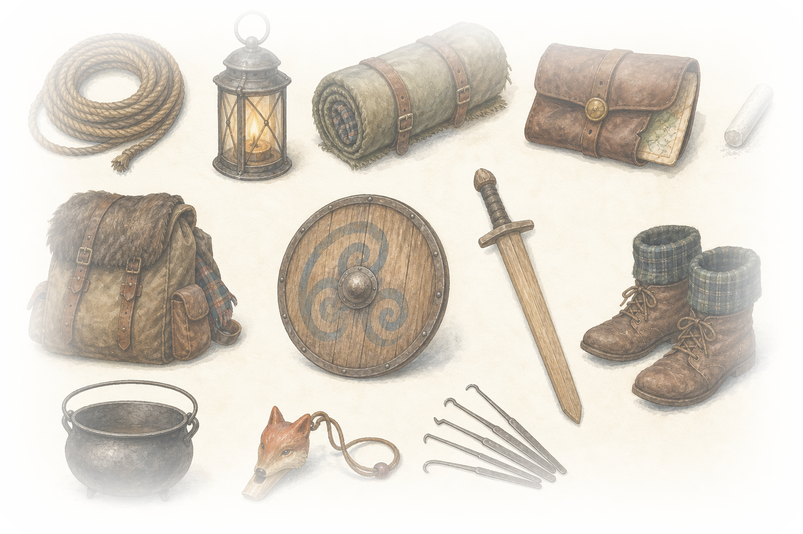
Traps, obstacles, and gear
Traps are puzzles with a warning
Use traps as playful obstacles: bell strings, sleepy roots, sticky jam doors, rune locks, puddle mirrors, or a bridge that sneezes. Always give a clue before a trap matters.
| Trap | Notice | Checks |
|---|---|---|
| Twig-bell alarm | Tiny bells in moss | Wis notice, Agility step, Int untie. |
| Sleepy root snare | Roots yawn quietly | Agility hop, Strength pull, Wis sing awake. |
| Moon-rune lock | Cold silver letters | Int read, Luck button, MP Rune Read. |
Equipment matters
| Gear | Helps with | Table effect |
|---|---|---|
| Rope | Climb, rescue, measure. | +1 when it clearly helps. |
| Lantern | Dark, mist, caves. | Reveals one clue before a roll. |
| Chalk | Maps and marks. | Prevents getting lost once. |
| Tiny toolkit | Locks and repairs. | Allows Int checks on devices. |
| Oat pouch | Animal trust. | +1 Wis with hungry creatures. |
Example scenario: adventurer view
The Bell-Root Path
You see: a path of soft moss, tiny silver bells tied to roots, and a sleeping fox curled beside a moon-rune door.
You feel: the place is quiet, like it is holding its breath.
Your choices
- Step carefully between the bells: Agility.
- Study how the bells are tied: Int.
- Whisper to the fox and ask what it knows: Wis.
- Hold the branch up for a friend: Strength.
- Tap your lucky button and choose the quietest root: Luck.
If things go wrong
- Wobble: one bell rings and the fox opens one eye.
- Yes, but: you pass, but your cloak snags a root.
- Bright success: you reach the moon-rune door and find a silver acorn key.
Example scenario: adventurer combat
The Bramble Sneak jumps out
A red-capped bramble creature shakes thorns and hisses, “No one takes my shiny bell!” It looks more scared than mean.
Adventurer turns
- Knight: protect a friend with Strength.
- Scout: dodge through roots with Agility.
- Bard: sing a silly rhyme with Wis.
- Mage: spend 1 MP on Glow-Pebble to show the bell is not stolen.
- Tinker: use Int to spot the bramble knot holding its cap too tight.
How it ends
When the Bramble Sneak reaches 0 HP, it is not defeated forever. It is tangled, tired, and ready to listen. If the adventurers offer the bell back or promise a new shiny button, it becomes a grumpy guide.
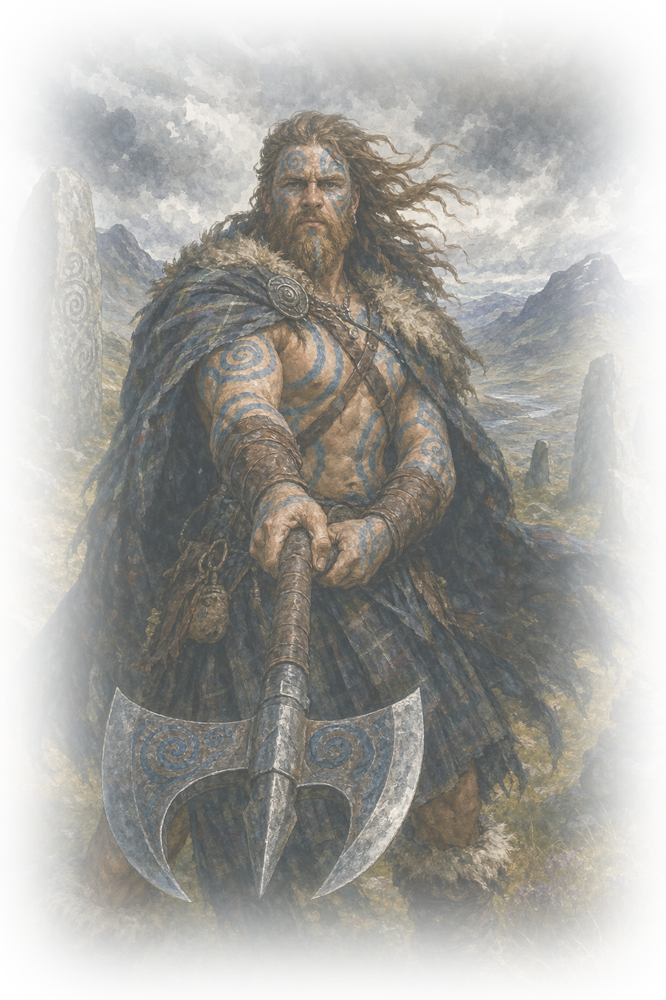
Spells, gear, and treasure
Safe little spells
- Glow-pebble: make a small light.
- Tea-steam: warm cold hands or reveal a breeze.
- Thistle-tickle: distract a grumpy creature for a moment.
- Kind whisper: help someone say what they feel.
- Button-bridge: make a tiny bridge for one small creature.
- Heather-hush: quiet a noisy room for one careful question.
A spell can help one small problem. Big problems still need friends, ideas, and choices.
Starting gear
- A snack wrapped in cloth.
- One useful tool.
- One pretty charm.
- One thing your hero drew themselves.
- A spare ribbon, button, bell, shell, or smooth stone.
- A tiny notebook for clues or doodles.
Useful tools
| Tool | Use |
|---|---|
| Lantern | See misty paths. |
| String | Tie, measure, or rescue. |
| Chalk | Mark a safe way back. |
| Wooden cup | Offer water, tea, or kindness. |
Treasure prompts
| Find | Story use |
|---|---|
| Silver button | Opens a promise gate. |
| Ribbon | Marks a safe path. |
| Bell | Calls one fairy friend. |
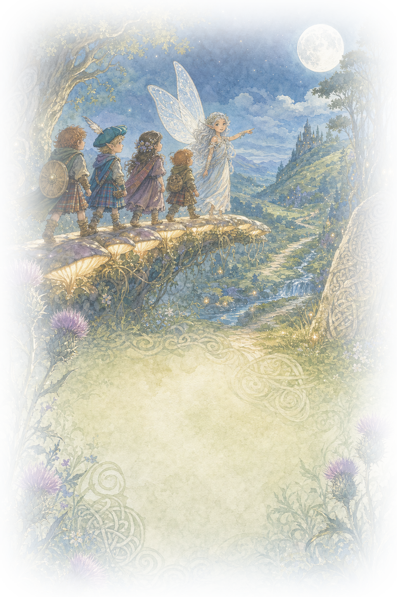
Spell list
Cantrips: always small, always safe
| Spell | Roll | Cost | What it does |
|---|---|---|---|
| Glow-Pebble | Luck | 0 MP | Make a pebble or charm shine like a candle. |
| Tea-Steam | Wis | 0 MP | Warm cold hands or reveal a hidden breeze. |
| Button-Bridge | Int | 0 MP | Make a tiny bridge for toys, fairies, or clues. |
| Heather-Hush | Wis | 0 MP | Quiet one noisy room long enough for a careful question. |
| Thistle-Tickle | Luck | 0 MP | Distract a grumpy creature for one moment. |
| Kind Whisper | Wis | 0 MP | Help someone say what they feel. |
Adventure spells
| Spell | Roll | Cost | Use |
|---|---|---|---|
| Mist Step | Agility | 1 MP | Slip past a watcher if a friend describes the mist. |
| Rune Read | Int | 1 MP | Ask the Guide one question about old writing. |
| Lucky Button | Luck | 1 MP | Turn one wobble into “yes, but” once per session. |
| Shield of Thistles | Strength | 1 MP | Hold back wind, rain, or falling branches for a turn. |
| Foxfire Path | Wis | 1 MP | Find the gentlest route through a confusing place. |
| Tiny Mend | Int | 1 MP | Repair a small broken object so it can help the story. |
Equipment shop
| Item | Cost | Use |
|---|---|---|
| Lantern | 3 copper | See in mist, caves, and under bridges. |
| Rope | 3 copper | Climb, tie, rescue, measure, or make a line. |
| Chalk | 1 copper | Mark a safe path or draw a puzzle answer. |
| Snack bundle | 1 copper | Share with a friend or hungry creature. |
| Wooden shield | 4 copper | Helps Strength rolls to protect or hold steady. |
| Soft boots | 4 copper | Helps Agility rolls to sneak or balance. |
| Tiny toolkit | 5 copper | Helps Int rolls to mend, open, or build. |
| Oat pouch | 2 copper | Helps Wis rolls with animals. |
| Lucky button | 3 copper | Helps one Luck roll per adventure. |
| Warm cloak | 3 copper | Stay cosy in rain, wind, or moonlit cold. |
| Bell | 2 copper | Call a friend, mark a rhythm, or wake a sleepy path. |
| Blank notebook | 2 copper | Draw maps, clues, promises, and creature friends. |
Coin names
| Coin | Value | Use |
|---|---|---|
| Copper | Basic coin | Snacks, chalk, rope, simple tools. |
| Silver | 10 copper | Starter purse, good tools, inn beds. |
| Gold | 10 silver | Rare rewards, mounts, special training. |
| Mythral | 100 gold | Legendary fairy metal; a story treasure. |
Starter kits
| Kit | Cost | Contains |
|---|---|---|
| Knight kit | 8 copper | Wooden shield, rope, snack bundle. |
| Scout kit | 8 copper | Lantern, chalk, soft boots. |
| Mage kit | 8 copper | Lucky button, notebook, bell, chalk. |
| Friend kit | 8 copper | Oat pouch, warm cloak, snack bundle, bell. |
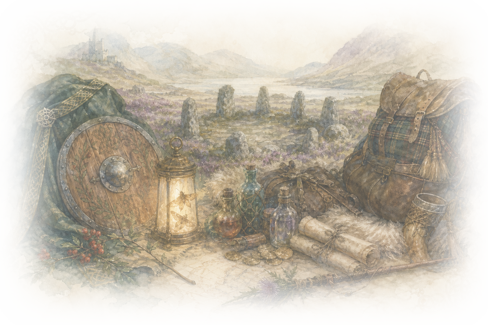
More spell and gear examples
Class cantrips in play
| Job | Cantrip scene |
|---|---|
| Thistle Knight | Shield Spark marks the safest place to stand. |
| Loch Scout | Mist Mark leaves friend-only glowing footprints. |
| Song-Spark Bard | Courage Note steadies a worried friend. |
| Hearth Mage | Glow-Pebble lights a cupboard, bridge, or cave. |
| Beast Friend | Gentle Scent makes a hand smell like oats or apples. |
| Puzzle Tinker | Button-Click wiggles one latch or knot. |
Coin examples
| Reward | Coins | Feels like |
|---|---|---|
| Helping a baker | 3 copper | Snack money. |
| Returning a moon-bell | 1 silver | A real thank-you. |
| Saving a village festival | 1 gold | A rare reward. |
| Finding mythral | 1 mythral | A legendary story treasure. |
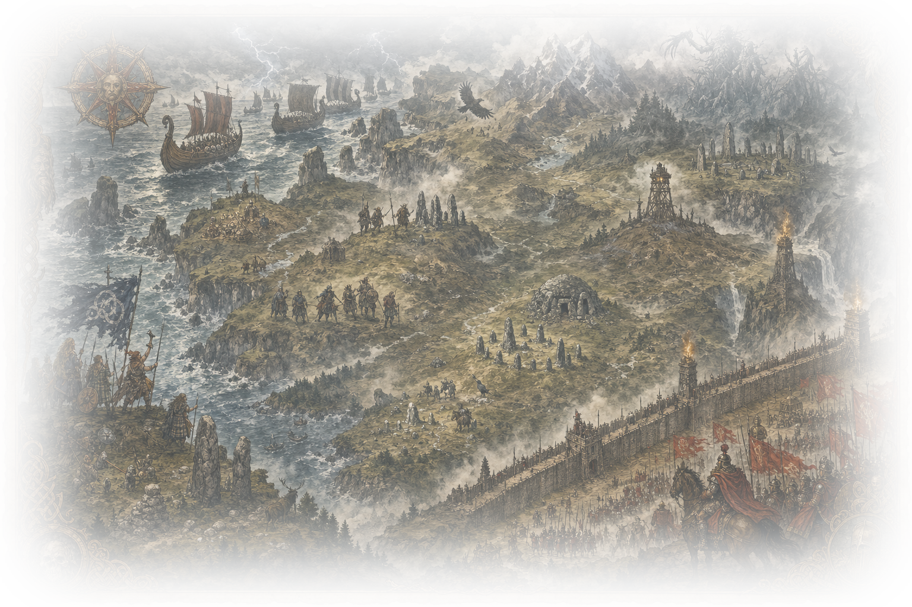
Making a hero: quick checklist
- Name your hero.
- Pick a kindred.
- Pick an adventure job.
- Choose stats: one +2, two +1, two +0.
- Pick one gear item and one charm.
- Answer: “Who do I want to help?”
Common first purchases
| Hero idea | Good buys |
|---|---|
| Protector | Shield, rope, snack bundle. |
| Explorer | Lantern, chalk, soft boots. |
| Mage | Lucky button, bell, notebook. |
| Animal friend | Oat pouch, warm cloak, snack. |
End of session
Ask: “Who did we help?” “What should we draw?” “What promise did we make?”
Track level
After a finished adventure, mark one story star. Four story stars usually means the hero gains a level.
If a player is stuck
Offer two choices: “Do you want to talk kindly, move quickly, or do the brave thing?”
If the group gets loud
Point to the picture, name one sound in the scene, then ask one adventurer what their hero notices.
More hero options
Backgrounds
Backgrounds give adventurers a first memory, a home tie, and one table reason to ask questions.
| Background | You know | Starter thing |
|---|---|---|
| Croft Kid | Animals, weather, chores. | Oat pouch. |
| Castle Page | Heraldry, manners, maps. | Ribbon badge. |
| Loch Fisher | Knots, boats, quiet patience. | Fishing line. |
| Market Runner | Prices, gossip, shortcuts. | Coin purse. |
| Hill Dreamer | Stars, stories, odd signs. | Dream pebble. |
Earned pets
Pets are not bought at character creation. They join after an adventure where the party helps, feeds, frees, or understands them.
| Pet | Earn by | Helps with |
|---|---|---|
| Rowan mouse | return its stolen crumb-hoard. | Sneaking and tiny keys. |
| Cloud moth | guide it to safe starlight. | Finding soft light. |
| Thistle hedgehog | save it from a boot-trap. | Noticing danger. |
| Seal pup | bring its song back to the loch. | Water clues. |
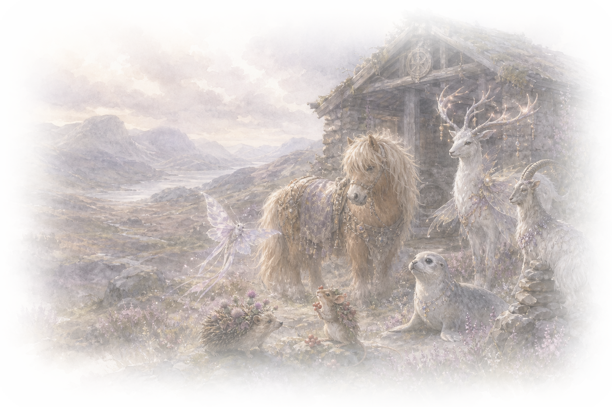
Earned mounts and pets
Companion rule
Mounts and pets are story friends, not shopping items. Earn one by helping it, keeping a promise, or finishing a quest. A companion never replaces a hero; it opens one extra approach.
- One companion may actively help the party in a scene.
- If it clearly helps, add +1 or reveal one clue before a roll.
- If danger targets it, the Guide offers a rescue choice instead of punishment.
- A companion needs care: food, rest, kindness, and a job it enjoys.
Companions to earn
| Companion | Earn by | Helps with |
|---|---|---|
| Highland pony | free it from a bog rope. | travel, carrying, courage. |
| Cairn goat | find its lost bell on a cliff. | climbing paths. |
| Fairy stag | protect its grove from tax-magic. | fast travel once per adventure. |
| Kelp-mane pony | return a moon-water charm. | safe loch crossings. |
| Rowan owl | solve an old-name riddle. | warnings and night clues. |
| Border warg | break the command collar. | tracking and brave defense. |
Companion bond track
| Bond | What it means | Unlock |
|---|---|---|
| 1 | Trusts the party. | +1 once per session. |
| 2 | Comes when called. | Can carry a message or small item. |
| 3 | Chooses the heroes. | May return dramatically once per campaign. |
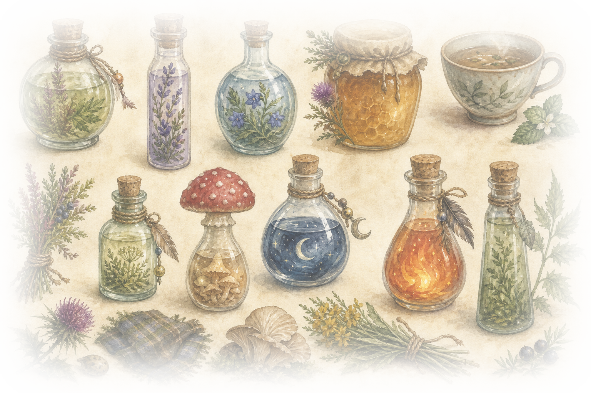
Player choices: more jobs and backgrounds
New jobs
- Cairn-Warden: protect oaths and stones.
- Storm-Singer: weather songs and brave speeches.
- Rune Tinker: locks, maps, clever gadgets.
- Goat Knight: mountain travel and comic bravery.
- Loch Herbalist: potions, cures, water lore.
- Crow Messenger: secrets, scouting, omens.
Backgrounds
- Raised by bridge-keepers.
- Found in a fairy ring.
- Apprentice to a kettle witch.
- Kin to a storm-clan poet.
- Grew up on a longship market.
- Escaped a Red Banner border fort.
Starting gift ideas
- Ask one bridge/road question.
- Know one old hill name.
- Carry one tiny healing tea.
- Understand one animal mood.
- Find one hidden door in mist.
- Turn a wobble into funny mud once.
Pet/mount hooks
- Find a lost cairn bell.
- Break a warg collar.
- Protect a fairy stag grove.
- Guide a cloud moth home.
- Share oats with a Highland pony.
- Solve a rowan owl riddle.
Progression beyond level 1
Level rewards
| Level | Reward |
|---|---|
| 2 | +2 HP or +2 MP; learn one spell/card. |
| 3 | Choose a feat/gift. |
| 4 | Upgrade one companion bond or home base. |
| 5 | Earn a named mythral story relic. |
Campaign tracks
| Track | How it grows |
|---|---|
| Companion bond | care, rescue, trust scenes. |
| Faction reputation | help clans/courts/towns. |
| Home base | add stable, library, kitchen, map room. |
| Spell upgrade | name, promise, ingredient. |
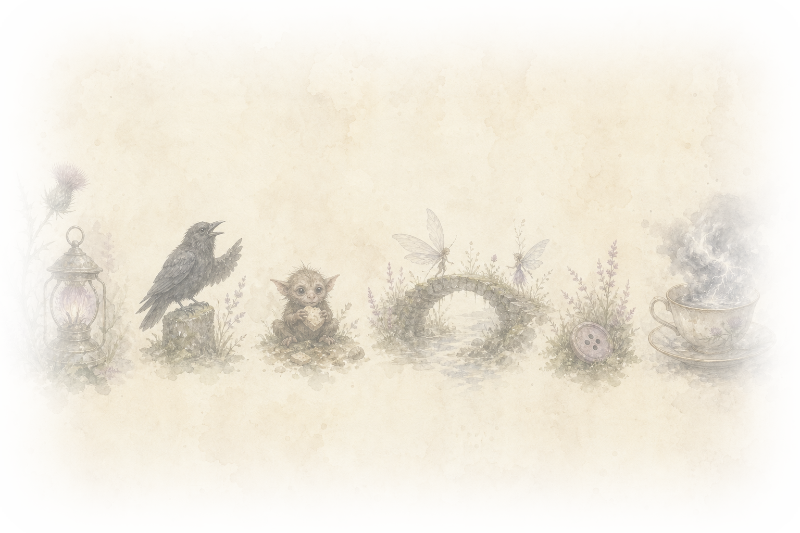
More magic: schools and rituals
Four gentle spell schools
Schools are story flavors, not homework. Use them to describe how magic looks, sounds, and asks for promises.
| School | Feels like | Examples |
|---|---|---|
| Hearth | warmth, light, mending | Glow-Pebble, Tiny Mend |
| Loch | mist, water, memory | Mist Step, Moon Reflection |
| Thistle | protection, brambles, courage | Shield of Thistles, Prickle Path |
| Story | songs, names, promises | Courage Note, Name Echo |
Rituals
A ritual is a slow spell that takes a scene, a promise, and three ingredients. It usually costs 2 MP from the group instead of one hero.
- Name what you want: light, bridge, truth, calm, memory.
- Offer three ingredients: coin, feather, song, button, water, ash, berry.
- Every adventurer says one helpful line.
- Roll Wis, Int, or Luck if the answer is exciting.
Spell upgrades
| Level | Upgrade choice | Example |
|---|---|---|
| 2 | Longer light | Glow-Pebble lasts a whole scene. |
| 3 | Friend boost | A cantrip can help a nearby friend. |
| 4 | Feat spell trick | Choose one spell feat when you gain a feat. |
| 5 | Big ritual | Group rituals can affect a bridge, grove, or cottage. |
Spell feat: Careful Magic
Once per session, when you spend MP, ignore the first harmless magical mess.
Spell feat: Shared Spark
Spend 1 extra MP so a friend also gets +1.
Spell feat: Bright Cantrip
Pick one cantrip. It can affect two tiny things instead of one.
Spell feat: Old Words
You may ask the Guide what one rune, rhyme, or fairy name means.
Spell feat: Potion Nose
You can identify a potion, poison, or enchantment ingredient by smell once per session.
Spell feat: Rune Stitcher
You may repair one damaged charm during a safe camp.
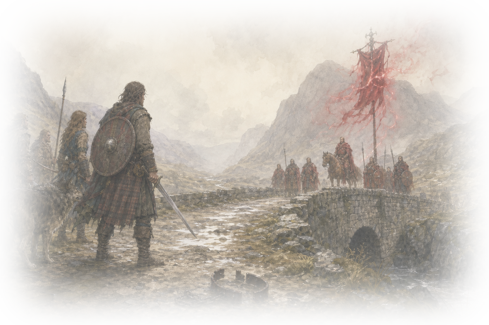
Advanced combat options
Armor and shields
| Gear | Cost | Rule |
|---|---|---|
| Padded cloak | 4 silver | Once per scene, reduce 1 HP of trouble. |
| Wooden shield | 6 silver | Protect a friend at +1 if you can reach them. |
| Thistle charm | 1 gold | Reduce one bramble/spell trouble by 1 HP. |
Conditions
| Condition | Means | Ends when |
|---|---|---|
| Tangled | You need help to move far. | Strength, Agility, or a friend helps. |
| Startled | Next roll is -1 unless soothed. | Friend says something kind. |
| Sleepy | You can act, but slowly. | Snack, song, or fresh air. |
| Glittered | Easy to spot. | Wash, cloak, or scene ends. |
| Poisoned | A venom causes a temporary condition. | Use the listed cure. |
| Cursed | A spell changes the scene rules. | Break the rune, oath, or item. |
Battle complications
- Falling stones split the party into two zones.
- A banner gives enemies +1 until cut down.
- A poison cloud makes everyone seek clean water.
- A frightened monster grabs a map instead of a hero.
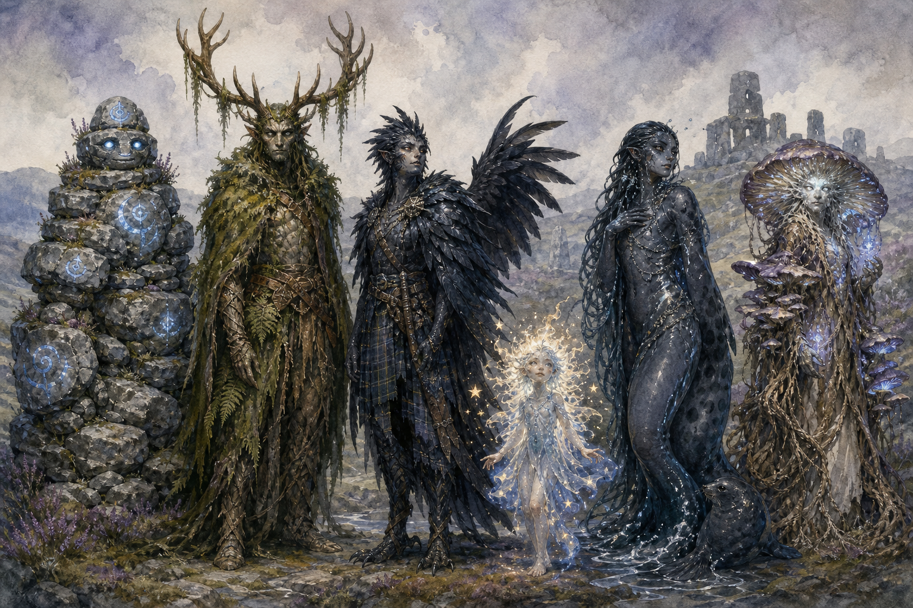
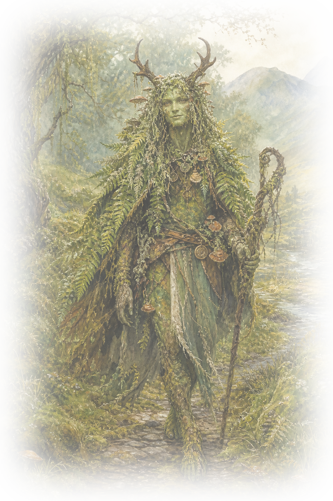
Enchantments and magic items
Enchanting rule
- Choose a plain item: blade, cloak, ring, harp, lantern, boots, spoon, shield.
- Choose one enchantment word: Bright, Thorn, Loch, Cairn, Storm, Rowan, Moon, Ember.
- Pay the ingredient cost and make a promise about how the item will be used.
- Enchanted items add +1 only when the story clearly matches their word.
Enchantment spells
| Spell | Cost | Effect |
|---|---|---|
| Wake Charm | 1 MP | Ask a sleeping magic item what it wants. |
| Bind Brightness | 2 MP + silver dust | Store one cantrip inside an item until next dawn. |
| Rune-Lock | 2 MP | Seal a door, chest, or promise until the right word is spoken. |
| Unweave Curse | 3 MP group ritual | Turn a harmful enchantment into a clue, mark, or choice. |
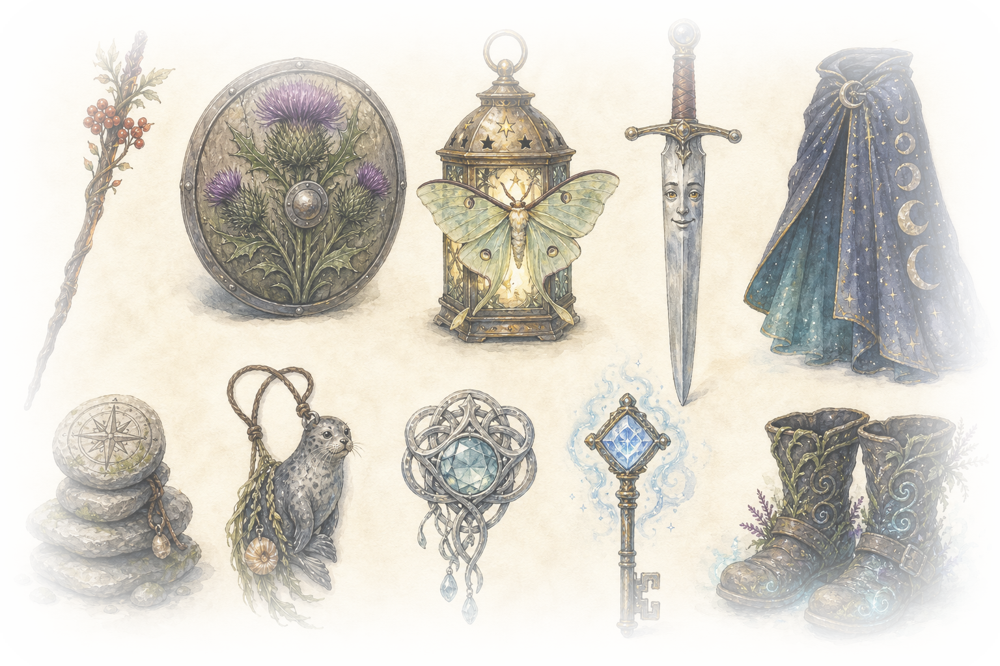
Magic item examples
Cairn-Knuckle Ring
+1 Strength when holding, bracing, or remembering an oath. If used selfishly, it grows heavy.
Rowan-Bark Shield
Once per scene, reduce 2 HP of trouble from thorns, arrows, or frightened beasts.
Loch-Mirror Cloak
+1 Agility in mist or moonlight; on a wobble, your reflection gives advice too late.
Star-Moth Lantern
Reveals hidden ink, invisible tracks, and fairy doors; moths follow it everywhere.
Storm-Harp String
A bard can spend 1 MP to turn thunder, shouting, or battle-noise into a steady rhythm.
Mythral Seed Blade
A legendary story weapon. It cuts curses and brambles, not helpless foes. Worth 100 gold or one impossible promise.
Potions and poisons
Potions
| Potion | Cost | Effect |
|---|---|---|
| Heatherheart Draught | 2 silver | Regain 3 HP and ignore Startled once. |
| Loch-Breath Sip | 3 silver | Breathe under calm water for one scene. |
| Giant-Step Tonic | 1 gold | +1 Strength for lifting, pushing, or carrying in one scene. |
| Foxwit Tea | 1 gold | +1 Int for riddles, traps, or runes in one scene. |
Poisons and venoms
Poisons in this game are scary obstacles, not lethal gore. They make adventurers sleepy, confused, glittered, or slowed until treated.
| Poison | Source | Effect / cure |
|---|---|---|
| Nightshade Jam | Redcap trick | Sleepy for one scene; cured by bitter tea. |
| Black Bog Venom | Bog drake bite or thorn | -1 Agility until washed with clean running water. |
| Iron Crow Ink | Cursed feather | Cannot speak a lie; cured by confessing one useful truth. |
| Frost-Thistle Prickle | Winter barb | Startled; cured by warm cloak and a brave song. |